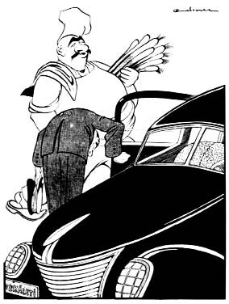

 Millet Meclisi müzakerelerinden: Resmî otomobiller şahsî işlerde kullanılıyormuş! Ahçıbaşı— Pırasayı aldık... Şimdi de iki limon alacağız... Çek bakkala şofer efendi!.. Cemal Nadir, Akbaba, 1939, S. 281.